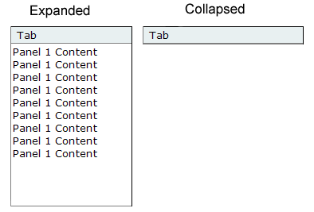

A Spry widget is a page element that combines HTML, CSS and JavaScript data to enable user interaction. The Spry framework for Ajax supports a set of reusable widgets written in standard HTML, CSS, and JavaScript code.
A Spry widget is a page element that combines HTML, CSS and JavaScript code to enable user interaction. A Spry widget is made up of the following parts:
The Spry framework supports a set of reusable widgets written in standard HTML, CSS, and JavaScript code. You can easily insert these widgets - the code is HTML and CSS at its simplest - and then style the widget. The behaviors in the framework include functionality that lets users show or hide content on the page, change the appearance (such as color) of the page, interact with menu items, and much more.
Each widget in the Spry framework is associated with unique CSS and JavaScript files, available on Adobe Labs. The CSS file contains everything necessary for styling the widget, and the JavaScript file gives the widget its functionality. The CSS and JavaScript files associated with a given widget are named after the widget, so it's easy for you to know which files correspond to which widgets. (For example, the files associated with the Accordion widget are called SpryAccordion.css and SpryAccordion.js).
It is critical to the usability of the widget that it be accessible when following established web navigation conventions. You can't assume that the user is using a mouse, and therefore Adobe has taken steps to ensure that all aspects of the currently available widgets are accessible through the keyboard. In the Accordion widget, for example, you can use up and down arrow keys to open content panels. Adobe encourages all widget developers to build in this kind of functionality.
It's also impossible to control the end user's environment. Adobe develops widgets to ensure that when JavaScript is turned off, all the content of the widget is still available on the screen. While this will most likely affect the page layout, it is more important that the content of the widget still be available, especially when working with disclosure widgets. Adobe ensures that default CSS states do not set visibility to hidden, and that HTML code is not positioned off screen.
One of the goals of Spry is to enable the user community to build and share widgets. Adobe has a set of guidelines to use when authoring widgets for public distribution. Adobe is providing these guidelines with the hope that all widgets will have a consistent base functionality.
Use standard HTML code for structure
Don't require CSS code unless necessary
If you require CSS code for functionality, clearly document the requirements
Use a single line (if possible) of JavaScript to enable the widget functionality
Write keyboard navigation options in a function by default
When JavaScript is turned off, the content should still appear on the page
Widgets should be self-contained. Everything needed for the widget is provided in the HTML, JavaScript, and CSS files.
Keeping to these guidelines will help ensure that widgets are easy to understand and use, plus consistency strengthens the framework for everyone.
Using standard code is important because there is less to learn for the common user. It also makes it easy to use these widgets in WYSIWYG editors.
CSS code is used in some widgets to show and hide content by switching the visibility rule in CSS code. This is an example of a required use of CSS. Such a use is acceptable because the CSS code is the obvious mechanism for showing and hiding content. CSS code that is pure styling, however, should not be required. The widget should always function without styling. Document required CSS rules with comments in the CSS file, and if you're providing further documentation, mention it there as well.
Most widgets are activated with a single line of JavaScript code just after the actual widget code. Try to keep the JavaScript arguments to a minimum. Widths and heights of widgets should be set in CSS code, not in JavaScript, unless there are no other options.
Keyboard navigation and accessibility are important to users and to Spry. Write keyboard navigation so that users can use common workflow keys (arrow keys, space bar) to access all parts of your widget. Use things like tab order where appropriate.
It's vital that content not be hidden in non-scripting environments. Ensure that when JavaScript is turned off, your content is not hidden because of CSS visibility being turned off or content being positioned off screen.
A Collapsible Panel widget is a panel that can store content in a compact space. Users hide or reveal the content stored in the Collapsible Panel by clicking the tab of the widget. The following example shows a Collapsible Panel widget, expanded and collapsed.
The HTML code for the Collapsible Panel widget is made up of an outer div tag that contains the content div tag and the tab container div tag. The HTML code for the Collapsible Panel widget also includes script tags in the head of the document and after the Collapsible Panel's HTML code.
The script tag in the head of the document defines all of the JavaScript functions related to the Collapsible Panel widget. The script tag after the Collapsible Panel widget code creates a JavaScript object that makes the Collapsible Panel interactive. Following is the HTML code for an Collapsible Panel widget:
<head>
...
<!--Link the CSS style sheet that styles the Collapsible Panel-->
<link href="SpryAssets/SpryCollapsiblePanel.css" rel="stylesheet"
type="text/css" />
<!--Link the Spry Collapsible Panel JavaScript library-->
<script src="SpryAssets/SpryCollapsiblePanel.js" type="text/javascript"></script>
</head>
<body>
<!--Create the Collapsible Panel widget and assign classes to each element-->
<div id="CollapsiblePanel1" class="CollapsiblePanel">
<div class="CollapsiblePanelTab">Tab</div>
<div class="CollapsiblePanelContent">Content</div>
</div>
<!--Initialize the Collapsible Panel widget object-->
<script type="text/javascript">
var CollapsiblePanel1 = new Spry.Widget.CollapsiblePanel("CollapsiblePanel1");
</script>
</body>
In the code, the new JavaScript operator initializes the Collapsible Panel widget object, and transforms the div content with the ID of CollapsiblePanel1 from static HTML code into an interactive page element. The Spry.Widget.CollapsiblePanel method is a constructor in the Spry framework that creates Collapsible Panel objects, and the information necessary to initialize the object is contained in the SpryCollapsiblePanel.js JavaScript library that you linked to in the head of the document.
Each of the elements in the Collapsible Panel widget contains a CSS class. These classes control the style of the Collapsible Panel widget, and exist in the accompanying SpryCollapsiblePanel.css file.
You can change the appearance of any given part of the Collapsible Panel widget by editing the CSS code that corresponds to the class names assigned to it in the HTML code. For example, to change the background color of the Collapsible Panel's tabs, edit the CollapsiblePanelTab rule in the SpryCollapsiblePanel.css file. Keep in mind that changing the CSS code in the SpryCollapsiblePanel.css file will affect all collapsible panels that are linked to that file.
In addition to the classes shown in the HTML code, the Collapsible Panel widget includes certain default behaviors that are attached to the widget. These behaviors are a built‑in part of the Spry framework, and are in the SpryCollapsiblePanel.js JavaScript library file. The Collapsible Panel library includes behaviors related to hovering, clicking (to open and close the panel), panel focus, and keyboard navigation.
You can change the look of the Collapsible Panel as it relates to these behaviors by editing the appropriate classes in the SpryCollapsiblePanel.css file. If for some reason you want to remove a given behavior, you can delete the CSS rules that correspond to that behavior.
Note: While you can change the look of the Collapsible Panel as it relates to a certain behavior, you cannot alter the built‑in behaviors themselves. For example, Spry still places a CollapsiblePanelFocused class on the currently open panel, even if no properties are set for the CollapsiblePanelFocused class in the SpryCollapsiblePanel.css file.
In the preceding example, div tags create a nested tag structure for the widget:
Container div Tab div Content div
This 2-level, 3-container structure is essential for the Collapsible Panel widget to work properly; the structure, however, is more important than the actual tags you decide to use. Spry reads the structure (not div tags necessarily) and builds the widget accordingly. As long as the 2-level, 3-container structure is in place, you can use any block-level element to create the widget:
Container div H3 tag P tag
The div tags in the example are flexible and can contain other block-level elements. A p tag (or any other inline tag), however, cannot contain other block-level elements, so you cannot use it as a container or panel tag for the collapsible panel.
The SpryCollapsiblePanel.css file contains the rules that style the Collapsible Panel widget. You can edit these rules to style the collapsible panel's look and feel. The names of the rules in the CSS file correspond directly to the names of the classes specified in the Collapsible Panel widget's HTML code.
Note: You can replace style-related class names in the SpryCollapsiblePanel.css file and HTML code with class names of your own. Doing so does not affect the functionality of the widget, as CSS code is not required for widget functionality.The default functionality for the behaviors classes at the end of the style sheet are defined in the SpryCollapsiblePanel.js JavaScript library file. You can change the default functionality by adding properties and values to the behavior rules in the style sheet.
The following is the CSS code for the SpryCollapsiblePanel.css file:
/*Collapsible Panel styling classes*/
.CollapsiblePanel {
margin: 0px;
padding: 0px;
border-left: solid 1px #CCC;
border-right: solid 1px #999;
}
.CollapsiblePanelTab {
font: bold 0.7em sans-serif;
background-color: #DDD;
border-top: solid 1px #999;
border-bottom: solid 1px #CCC;
margin: 0px;
padding: 2px;
cursor: pointer;
-moz-user-select: none;
-khtml-user-select: none;
}
.CollapsiblePanelContent {
margin: 0px;
padding: 0px;
border-bottom: solid 1px #CCC;
}
.CollapsiblePanelTab a {
color: black;
text-decoration: none;
}
.CollapsiblePanelOpen .CollapsiblePanelTab {
background-color: #EEE;
}
.CollapsiblePanelTabHover, .CollapsiblePanelOpen .CollapsiblePanelTabHover {
background-color: #CCC;
}
.CollapsiblePanelFocused .CollapsiblePanelTab {
background-color: #3399FF;
}
The SpryCollapsiblePanel.css file contains extensive comments, explaining the code and the purpose for certain rules. For further information, see the comments in the file.
For example, create a folder called SpryAssets in the root folder of your web site, and move the SpryCollapsiblePanel.js file to it. The SpryCollapsiblePanel.js file contains all of the information necessary for making the Collapsible Panel widget interactive.
<script src="SpryAssets/SpryCollapsiblePanel.js" type="text/javascript"></script>
Make sure that the file path to the SpryCollapsiblePanel.js file is correct. This path varies depending on where you've placed the file in your web site.
<link href="SpryAssets/SpryCollapsiblePanel.css" rel="stylesheet" type="text/css" />
Make sure that the file path to the SpryCollapsiblePanel.css file is correct. This path varies depending on where you've placed the file in your web site.
<div id="CollapsiblePanel1" class="CollapsiblePanel"> </div>
<div id="CollapsiblePanel1" class="CollapsiblePanel"> <div class="CollapsiblePanelTab">Tab</div> </div>
<div class="AccordionPanel"> <div class="CollapsiblePanelTab">Tab</div> <div class="CollapsiblePanelContent">Content</div> </div>
Insert the content between the opening and closing CollapsiblePanelContent tags (For example, Content, as in the preceding example). The content can be any valid HTML code, including HTML form elements.
<div id="CollapsiblePanel1" class="CollapsiblePanel">
. . .
</div>
<script type="text/javascript">
var acc1 = new Spry.Widget.CollapsiblePanel("CollapsiblePanel1");
</script>
The new JavaScript operator initializes the Collapsible Panel widget object, and transforms the div content with the ID of CollapsiblePanel1 from static HTML code into an interactive collapsible panel object. The Spry.Widget.CollapsiblePanel method is a constructor in the Spry framework that creates collapsible panel objects. The information necessary to initialize the object is contained in the SpryCollapsiblePanel.js JavaScript library that you linked to at the beginning of this procedure.
Make sure that the ID of the collapsible panel's div tag matches the ID parameter you specified in the Spry.Widgets.CollapsiblePanel method. Make sure that the JavaScript call comes after the HTML code for the widget.
The complete code looks as follows:
<head>
...
<link href="SpryAssets/SpryCollapsiblePanel.css" rel="stylesheet" type="text/css" />
<script src="SpryAssets/SpryCollapsiblePanel.js" type="text/javascript"></script>
</head>
<body>
<div id="CollapsiblePanel1" class="CollapsiblePanel">
<div class="CollapsiblePanelTab">Tab</div>
<div class="CollapsiblePanelContent">Content</div>
</div>
<script type="text/javascript">
var CollapsiblePanel1 = new Spry.Widget.CollapsiblePanel("CollapsiblePanel1");
</script>
</body>
Making widgets accessible for keyboard navigation is an important part of every widget. Keyboard navigation lets the user control the widget open or close state using the arrows or user defined keys.
The foundation of keyboard navigation is the tabIndex attribute. This attribute tells the browser how to use the tabs to navigate through the document.
To enable keyboard navigation on the collapsible panel, add a TabIndex value to the collapsible panel tab tag, as follows:<div id="CollapsiblePanel1" class="CollapsiblePanel"> <div class="CollapsiblePanelTab" tabIndex="0">Tab</div> <div class="CollapsiblePanelContent">Content</div> </div>
If the tabIndex attribute has a value of zero (0), the browser determines the order. If the tabIndex attribute has a positive integer value, that order value is used.
To enable keyboard navigation, wrap the tab content with an a tag.
Note: Using tabIndex on a div tag is not XHTML 1.0 compliant.You can also set custom keys for keyboard navigation. Custom keys are set as arguments of the collapsible constructor script:
<script type="text/javascript">
var CollapsiblePanel1 = new Spry.Widget.CollapsiblePanel("CollapsiblePanel1", {openPanelKeyCode: 34 /* PgDn key */, closePanelKeyCode: 33 /* PgUp key */});
</script>
By default the Collapsible Panel widget is open when the web page loads in a browser. You can, however, change the status of the panel if you want the panel to be closed when the page loads.
Set the contentIsOpen option in the constructor as follows:<script type="text/javascript">
var CollapsiblePanel1 = new Spry.Widget.CollapsiblePanel("CollapsiblePanel1", { contentIsOpen: false });
</script>
You can also check the status of the panel with the isOpen function. The following code returns true if the panel is open and false if it is not:
<script type="text/javascript">
function getStatus(){
var xx = CollapsiblePanel1.isOpen();
document.form1.textfield.value = xx
}
</script>
</head>
<body>
<div id="CollapsiblePanel1" class="CollapsiblePanel">
<div class="CollapsiblePanelTab" tabIndex="0" onclick="getStatus();">Tab</div>
<div class="CollapsiblePanelContent">Content</div>
</div>
<form id="form1" name="form1" method="post" action="">
<input name="textfield" type="text" id="textfield" value="a" size="50" />
</form>
<script type="text/javascript">
<!--
var CollapsiblePanel1 = new Spry.Widget.CollapsiblePanel("CollapsiblePanel1");
//-->
</script>
You can programatically open and close the Collapsible Panel widget by using JavaScript functions. For example, you might have a button on your page, that opens the collapsible panel when the user clicks the button.
Use the following functions to open or close a collapsible panel:<input type="button" onclick="CollapsiblePanel1.open();" >open panel</input>
<input type="button" onclick="CollapsiblePanel1.close();">close panel</input>
<script type="text/javascript">
var CollapsiblePanel1 = new Spry.Widget.CollapsiblePanel("CollapsiblePanel1");
</script>
The SpryCollapsiblePanel.css file provides the default styling for the Collapsible Panel widget. You can, however, easily customize the widget by changing the appropriate CSS rule. The CSS rules in the SpryCollapsiblePanel.css file use the same class names as the related elements in the collapsible panel's HTML code, so it's easy for you to know which CSS rules correspond to the different sections of the Collapsible Panel widget. Additionally, the SpryCollapsiblePanel.css file contains class names for behaviors that are related to the widget (for example, hovering and clicking behaviors).
The SpryCollapsiblePanel.css file should already be included in your website before you start customizing.
Note: Internet Explorer up to and including version 6 does not support Sibling and child contextual selectors (for example, .CollapsiblePanel + .CollapsiblePanel or .CollapsiblePanel > .CollapsiblePanel).Set properties for the entire Collapsible Panel widget container, or set properties for the components of the widget individually.
You can replace style-related class names in the SpryCollapsiblePanel.css file and HTML code with class names of your own. Doing so does not affect the functionality of the widget.
The SpryCollapsiblePanel.css file contains extensive comments, explaining the code and the purpose for certain rules. For further information, see the comments in the file.
Set properties for the entire Collapsible Panel widget container, or set properties for the components of the widget individually.
To change the text format of a Collapsible Panel widget, use the following table to locate the appropriate CSS rule, and then add your own text styling properties and values.| Style to change |
Relevant CSS rule |
Example of properties and values to add or change |
|---|---|---|
Text in the entire collapsible panel |
.CollapsiblePanel |
font: Arial; font-size:medium; |
Text in panel tab only |
.CollapsiblePanelTab |
font: bold 0.7em sans-serif; (This is the default value.) |
Text in content panel only |
.CollapsiblePanelContent |
font: Arial; font-size:medium; |
| Color to change |
Relevant CSS rule |
Example of property and value to add or change |
|---|---|---|
Background color of panel tab |
.CollapsiblePanelTab |
background-color: #DDD; (This is the default value.) |
Background color of content panel |
.CollapsiblePanelContent |
background-color: #DDD; |
Background color of tab when panel is open |
.CollapsiblePanelOpen .CollapsiblePanelTab |
background-color: #EEE; (This is the default value.) |
Background color of open panel tab when the mouse pointer moves over it |
.CollapsiblePanelTabHover, .CollapsiblePanelOpen .CollapsiblePanelTabHover |
background-color: #CCC; (This is the default value.) |
By default, the Collapsible Panel widget expands to fill available space. To constrain the width of a Collapsible Panel widget, set a width property for the collapsible panel container.
To set the height of a collapsible panel, add a height property to the CollapsiblePanelContent rule or the CollapsiblePanel rule.
In the SpryCollapsiblePanel.css file, add a height property and value to the CollapsiblePanelContent rule, for example, height: 300px;. Note: Setting the height of the CollapsiblePanel rule sets the height of the entire widget, independent of the content panel size.The collapsible panel widget includes a few predefined behaviors. These behaviors consist of changing CSS classes when a particular event occurs. For example, when a mouse pointer hovers over a collapsible panel tab, Spry applies the CollapsiblePanelTabHover class to the widget. (This behavior is similar to a:hover for links.) The behaviors are blank by default; to change them, add properties and values to the rules.
| Behavior |
Description |
|---|---|
.CollapsiblePanelTabHover |
Spry adds this class to the widget's tab element whenever the mouse enters hovers over it. The class is automatically removed when the mouse leaves the tab. |
.CollapsiblePanelOpen |
Spry adds this class to the widget's top-level element when the panel's content area is visible. |
.CollapsiblePanelClosed |
Spry adds this class to the widget's top-level element when the panel's content area is closed |
.CollapsiblePanelFocused |
Spry adds this class to the widget's top-level element when the widget has keyboard focus. |
For examples, see the collapsible panel sample file located in the samples directory of the Spry directory that you downloaded from Adobe Labs.
<script type="text/javascript">
var CP2 = new Spry.Widget.CollapsiblePanel("CollapsiblePanel2", { hoverClass: "hover", openClass: "open", closedClass: "closed", focusedClass: "focused" });
</script>
By default, a collapsible panel uses animation to smoothly open and close.
To turn off animation so that the panel instantly opens and closes, send an argument in the collapsible panel constructor, as follows:<script type="text/javascript">
var CP5 = new Spry.Widget.CollapsiblePanel("CollapsiblePanel5", { enableAnimation: false });
</script>
You can change the time it takes for a panel to open. Set the time in milliseconds (1000 = 1 second). By default, Spry uses 500 milliseconds.
Add the duration option to the constructor:<script type="text/javascript">
var CP9 = new Spry.Widget.CollapsiblePanel("CollapsiblePanel9", { duration: 100 });
</script>
Copyright © 2006. Adobe Systems Incorporated. All rights reserved.